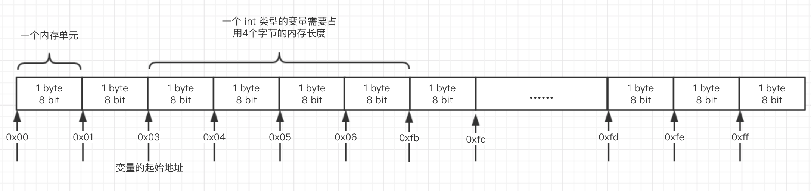

c语言基础-类型到底是什么
在c语言的代码中，变量都是需要指定变量的类型，要讲清楚变量类型是什么需要先讲清楚 程序与计算机硬件之间的关系。程序其实是数据结构与算法的组合，其中的数据结构主要是数据，数据对应到代码中就是各个变量（这里将变量常量等统一称作变量来看待），算法指的是程序中的判断逻辑和基本的数学计算，其实程序中的逻辑判断本质上也是计算（计算机中的计算其实是 布尔运算 其可以支持程序中的逻辑判断和数学计算）。
1. 变量类型是什么
程序中的计算是依赖计算机中的CPU硬件来实现，CPU的计算是对数据进行计算的，一次计算的过程是针对单个数据进行的，这些数据（也就是我们程序中的变量）是临时存储在CPU寄存器中方便CPU的计算，大量的变量数据是存储在内存中的。CPU在计算的时候 从内存中读取数据 到 寄存器 然后再进行计算 将计算的结果再写入到内存。
当然程序要实现这些操作（内存的读写 CPU 的计算）都需要通过操作系统来完成，操作系统执行这些程序的机器码 通过CPU这个中控实现将程序的数据加载到内存中，然后CPU对内存数据进行读写，CPU通过其内部的寄存器对数据进行临时的存储，归根结底 我们程序中的变量是需要存储到内存中的。关于内存的硬件原理可以参考 内存的工作原理，内存是以byte为一个最小的操作单位，当然在内存中其最小的硬件实现单位是 bit，对外部是以byte为最小单位。内存可以当作连续的一系列用于存储数据的格子，每个格子的存储单位是 byte，当然每个格子都需要一个地址编号，这些编号是连续的。
变量存储到内存中需要两个重要信息，内存的起始地址 和 内存占用长度，知道了这两个信息 就可以实现变量数据的读写。这些信息需要程序告诉操作系统，由操作系统通过CPU控制内存实现，对于内存地址 操作系统通过虚拟内存的形式对内存管理，所以操作系统可以自动分配合适的内存存储程序中的变量，然后还有需要多少的内存空间，这个信息需要程序来给出，程序是通过变量类型的形式给出了需要占用的内存长度，比如c语言中的类型对应需要占用的内存空间如下：
| 类型 | 长度(byte) |
|---|---|
| char | 1 |
| short | 2 |
| int | 4 |
| long | 8 |
| float | 4 |
| double | 8 |
所以，变量的类型是为了告诉操作系统需要分配多少的内存空间来存储这个变量，变量在内存中的存储形式如下图所示：

2. 基础变量
在c语言中定义的变量有多种类型，基础类型的有 整型的 char short int long 和 浮点的 float double，这些数据存储到内存中都是以二进制的形式存储。
2.1 变量在内存中的存储形式
2.1.1 有符号与无符号变量
对于数字 存在负号的情况需要考虑，所以在定义变量的时候还需要指定是有符号还是无符号，不定义是否有符号的话 默认是有符号的 定义形式如下：
1 | // 以下是定义有符号的形式 |
符号关键词影响变量值在内存中的存储形式，同时也会影响从内存中读取后对这个值的看待形式，计算机中对负数的存储形式可以参考 负数的存储-原码 反码 补码。计算机如果需要表达负数 就需要将一般的值拿出来表达负数，计算机中是将高位拿出来表示负数的，所以负数在二进制的形式中最高位是1，负数的内存存储形式与无符号变量的一些值的存储形式是一样的，当这些值在被读取出来的时候要根据这个 关键词 的定义决定将这个值当作负数看待还是当作整数看待。如下程序：
1 | int main() { |
变量 m 是有符号变量，其存储在内存中的形式是 10000000 ，然后将m赋值给一个无符号变量 n ，这时 n 变量的值在内存中的存储形式与 m 一样，当输出的时候，同样的内存存储形式 由于变量的有无符号定义不同 其结果也不同了。
2.1.2 浮点型变量的存储形式
2.2 指针型变量与非指针型变量
起始在程序中 变量分为两种的 一种是上面讲的一般变量 另一种就是指针型变量，指针型变量的定义形式与一般变量的定义形式略有不同，指针型变量在类型定义后有一个修饰符 *
1 | // 一般变量的定义 |
指针型变量与一般变量有所不同，一般变量存储程序计算需要的数据，指针变量存储的是一般变量存储在内存的内存地址，所以一般变量占用的内存空间由变量定义的类型决定，指针型变量由于存储的是内存地址，在x64架构上 其占用的内存空间是固定的 8 byte，其并不会受自己定义类型的影响，因为指针型变量的类型是为了在读取变量的时候需要读取多少内存空间。上面我们讲过变量存储在内存中重要的信息是 内存起始地址和需要占用的内存空间，占用的内存空间有一般变量的类型决定，内存起始地址是操作系统确定的，程序中也是可以读取到这个内存地址的，其操作符是 & ，其返回的是内存地址 。同样可以通过内存地址读取内存中的值，操作符是 *，这个操作符只能作用在指针类型的变量上，指针变量的值是内存的起始地址，指针变量定义的类型确定了读取内存的长度，这些信息就能确定读取值了。
1 | int main() { |
指针型变量是可以参与运算的，只不过其不像一般变量 参与运算是数学上的元素，指针型变量参与运算其实是地址偏移的计算，假设指针变量 int * p 对其进行计算 p+5 相当于 内存地址向高位移动 5 个 int类型的内存长度后的内存地址 p + 5 等同于 内存起始地址 + 5 * sizeof(int)
1 | #define DEFAULT_ADDRESS 1U |
3. 数组
数组是同一种变量类型的多个值的集合，这些值在内存中是相邻的，数组变量的定义形式如下：
1 | int arr[8] = {初始化的值}; |
其中变量名出 arr 是一个指针类型的变量 这是与其他变量定义不同的地方。其次是 数组变量读取数据是通过下标的形式 arr[3] 其本质是内存地址的偏移，也是内存地址偏移的一种形式。
1 | int main() { |
数组下标取值是内存地址偏移取值的一种简化形式 arr[n] 等价于 *(arr+n)
4. 结构体 与 联合体
结构体与联合体是不同类型变量的组合，结构体 联合体作为一个大的变量 其实是各个标量的变量的组合，各个变量是他们的属性，这些变量在内存中存储的位置是连续的
4.1 结构体 struct
结构体的定义与使用
1 | 定义结构体类型 foo |
同样 结构体变量同样存在一般变量与指针变量，可以通过操作 & 获取变量的内存地址 然后通过计算内存偏移量 找到存储属性值的内存地址，这样的形式读取内存中的值。
1 | int main() { |
尝试通过计算内存地址的形式读取struct 属性
1 | struct foo { |
4.1.2 内存对齐
若将上面结构体属性顺序调换，通过内存读取的形式是否能够得到正确的值？
1 | struct foo { |
第一个属性读取正确 第二个属性读取出现了问题，属性 b 是char类型占用1个byte第二个变量存储的位置本应该是内存起始地址+1byte的地方，但是这里的结果表明第二个属性并不在这个位置，事实上他在 偏移4byte的位置，上面的代码改成 printf("%d\n", *(int *)(fp+4)) 就能读取到正确的结果(116) 这就是struct中的内存对齐。
要对struct 成员进行内存对齐的原因是 为了提升CPU对数据读取的效率，在大多数的架构中 CPU每次寻址 读取的是32bit的数据 也就是 4byte，如果变量在存储的时候没有内存对齐，CPU是以对齐的形式(32bit)读取数据的，这样就要读取两次 然后对数据重新组合才能得到值，这样提升了复杂度。
一般的程序中都是以 4 byte 内存对齐 可以通过宏定义来改变对齐值 #pragma pack <n>，内存对齐要达到的目的就是 在一个 4 byte的内存块中存储的下一个或多个变量，不能让变量跨两个 4 byte 内存块存储。对于变量 int long 都是 4byte倍数，short是 2byte 如果是这些变量存储是不需要考虑对齐的，怎样的存储都会对齐，但是出现的 char 类型占用 1byte内存就会 出现不对齐的情况了。内存对齐其实是解决如何存储char类型变量不使变量跨内存块存储的问题，并且在struct 中属性之间也是要按顺序进行存储的，不同的顺序会导致整个结构体需要占用的内存空间不同。
4.2 联合体 union
联合体如何结构体也是多个变量的组合，不同点是他么占用的内存空间不同，结构体会给每一个属性分配内存空间，联合体只会分配一个最大属性存储需要的空间。所以联合体的内存空间中只能存储所有属性中的一个，各个属性可以定义不同类型，这些类型定义决定在读写内存的时候需要的内存空间偏移量。
1 | union foo { |
当一个小变量覆盖一个大变量的时候，其只会覆盖低地址需要覆盖的部分，读取也只会读取类型指定的内存长度的数据
1 | union foo { |
整形提升
看一个奇怪的情况
1 | char c = 129; |
以上结果 已经超出了char所能表示的范围，有符号的 char 类型存储了一个值 129 这个值存储后实际表示的是负值 可以通过 printf("%d", c); 查看 其结果应该是 -127 ，这里我们将其以无符号的形式输出 就还应该得到 129 ，结果却得到一个更大的值，造成这种情况的原因是 整形提升。
我们的变量是存储在内存 char占用1byte，当需要计算的时候 CPU要将值读取到寄存器中的，寄存器一般都是 32位了也就是能存储 4byte的数据，当数据少于4byted的时候 CPU要做额外的工作处理这种输入不一致问题，CPU选择的是将变量的高位填充数据 既不影响计算 也不影响寄存器的存储，这个过程叫 整形提升。
其过程如下，如果是正数 高位填充 0 ，如果是负数 高位填充 1，将变量值补充对齐成 4 byte 的信号。正数高位补充 0 很明显不会造成影响，负数高位补充1的形式一时难以看出是否有影响，对于负数在内存中是以补码形式存储的，负数其实是正数在数轴上的对称位置上，负数的存储形式最高位一定是 1 ，当对其更高位补充1时 其表达的负数的值并没有变化：
1 | 四位的 1001 对应表达的有符号值是 -1 |
熟悉负数补码的计算方式的话就很好理解了，可以看作 高位的1是表示正负数 剩下位是值。